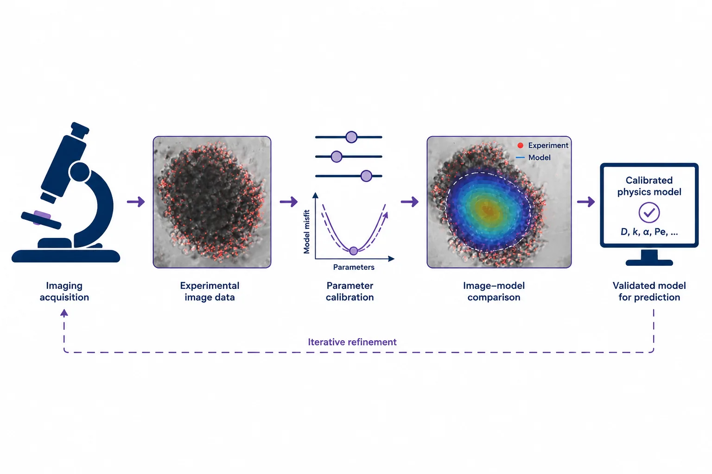

SmartDelivery Studio
A physics-informed AI platform for predicting nanoparticle transport, cellular uptake and drug release — and turning those predictions into formulation design guidance.
From parameters to design decisions.
Set up a delivery scenario, run multiscale simulations, compare with experiments and receive AI-guided recommendations — all in one graphical interface designed for biomedical researchers, not only modelling specialists.
- Define nanoparticle, body-fluid and tissue properties
- Simulate trajectories, penetration, uptake, release and forces
- Score delivery performance and get ranked design suggestions
- Export figures, data and reports

Four integrated modules.
Multiscale physics engine
Links particle, cellular, tissue and system scales. Resolves particle–particle, particle–cell, particle–ECM, particle–tissue and particle–barrier interactions, including aggregation, adhesion, breakage, degradation, drug release and mass transfer.
Physics-informed AI
Physics-generated microscale datasets train and constrain AI models. Surrogate and reduced-order models, adaptive sampling and mechanism generalisation enable fast design-space exploration, sensitivity and uncertainty analysis.
Image-informed calibration
Turns microscopy, fluorescence maps, penetration profiles, pressure drop, permeability and release data into quantitative model constraints — estimating diffusivity, adhesion strength, uptake rate, junction permeability and more.
User-friendly interface
A workflow-based interface for setup, simulation, calibration, AI learning, analysis and export, with drug-delivery-specific modules and visualisation tools.
What goes in, what comes out.
Inputs
Drug / nanoparticle — size, shape, polydispersity, surface charge, coating, drug loading, encapsulation efficiency, concentration.
Body-fluid environment — viscosity, density, pH, flow rate.
Tissue structure — porosity, ECM density, permeability, spheroid or organoid size.
Experimental data (optional) — images, concentration maps, penetration, permeability and release measurements for calibration.
Outputs
- Particle trajectories and 3D spatial distribution
- Penetration profiles and penetration depth
- Cellular uptake by depth, retention and residence time
- Drug release curves and released fraction
- Extracellular vs intracellular pathway contributions
- Force networks and pressure-drop responses
- Overall delivery score and ranked candidate designs
Grounded in your experiments.
A model is only as good as its parameters. Our calibration workflow links imaging and experimental measurements to hidden model parameters, then validates predictions against real delivery patterns — refining the model as new data arrive.
The goal is not to replace biological validation, but to plan better experiments, reduce unnecessary animal studies and bring mechanism-informed predictions in before later-stage testing.

Interested in early access?
Ask us for a demonstration, discuss licensing, or explore a research collaboration.